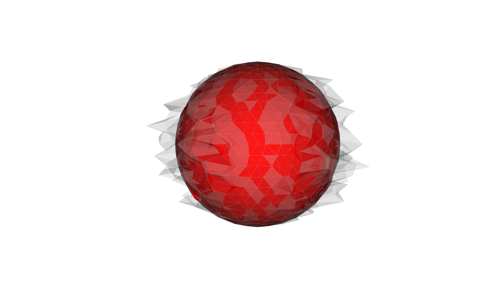

Projects a closed triangular surface mesh radially onto a sphere and then iteratively relaxes the metric distortion this introduces ("unfolding"), so that geodesic distances and face orientations stay close to those of the input surface - a step typically used to prepare an inflated cortical surface for spherical registration.
Usage
mris_sphere(
mesh,
target_radius = 100,
n_averages = 64L,
niterations = 25L,
l_dist = 1,
l_area = 1,
momentum = 0.9,
dt = 0.05,
verbose = FALSE
)Arguments
- mesh
triangular mesh of class
'mesh3d', typically an inflated surface (seemris_inflate). Must be closed, manifold, and genus-0 - the same hard precondition asmris_inflate.mris_spherewill raise an error if such defects are detected.- target_radius
radius of the target sphere. Default
100.- n_averages
number of gradient-averaging passes applied to the distance-term gradient each iteration (the same neighborhood-averaging mechanism
mris_inflateuses). Default64; reduced from the much larger averaging size used in production pipelines (tuned for cortical surfaces with hundreds of thousands of vertices) to a size more practical for typical'mesh3d'inputs.- niterations
number of unfolding iterations. Default
25.- l_dist
distance-preservation coefficient. Default
1.0.- l_area
folded-face repulsion coefficient. Default
1.0.- momentum
momentum coefficient. Default
0.9.- dt
time step. Default
0.05.- verbose
logical; print per-iteration progress. Default
FALSE.
Details
This is a reduced procedure, not a complete reproduction of any
particular reference implementation. The full unfolding procedure
described in the literature integrates seven weighted energy terms against
a separate reference surface through a multi-resolution, multi-thousand
line optimization pipeline, which is out of scope for this package. Instead,
this implementation keeps the two dominant terms and integrates them with
the same momentum-based machinery mris_inflate uses:
- Distance term (
l_dist) Restoring force pulling each vertex back towards the input mesh's own original distances to its neighbors.
- Area term (
l_area) Repulsive force that acts only on folded/negative-area faces, pushing their vertices apart - this is the actual "unfolding" mechanism.
Both terms are integrated via momentum integration with gradient averaging
and a 1 mm per-step displacement cap, exactly as mris_inflate
does.
A further simplification: the reference procedure relaxes a freshly
spherical-projected surface against a separate, previously-loaded
white-matter reference surface for the distance term; since this function
takes a single mesh as input, the input mesh's own metric (captured before
projection) is used as the reference instead - the same convention
mris_inflate already uses, and the practical analogue (the
white-matter surface is normally what gets inflated to produce a typical
input to this kind of unfolding step).
Examples
if (is_not_cran()) {
sphere <- vcg_sphere(sub_division = 3L)
# deform so there is metric distortion to relax
sphere$vb[1, ] <- sphere$vb[1, ] * (1 + 0.2 * rnorm(ncol(sphere$vb)))
result <- mris_sphere(
sphere,
n_averages = 8L,
niterations = 10L,
target_radius = 1,
verbose = TRUE
)
plot_mesh_polygon(list(sphere, result),
col = list("gray", "red"),
alpha = c(0.3, 0.9))
str(result)
}
#> mris_sphere: building adjacency for 642 vertices, 1280 faces
#> mris_sphere: projecting onto sphere of radius 1.00
#> mris_sphere: starting unfolding, initial neg_area=0.4502 (total_area=12.9263)
#> iter 5: neg_area=0.48446 (total_area=12.9563)
#> iter 10: neg_area=0.55859 (total_area=13.0220)
#> mris_sphere: done (10 iterations)

#> List of 3
#> $ vb : num [1:4, 1:642] 0.4267 0.901 0.0811 1 0.505 ...
#> $ it : int [1:3, 1:1280] 1 2 3 4 1 3 5 2 1 6 ...
#> $ normals: num [1:4, 1:642] 0.4005 0.9153 0.0425 1 0.361 ...
#> - attr(*, "class")= chr "mesh3d"